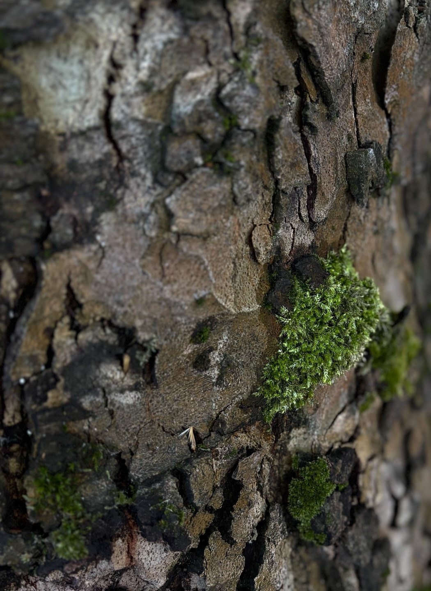

Work
Five bodies of work, from the moss back to the overgrown houses.
Newest first, so the moss comes before the woods and the woods come before the houses. Open any drawing and three close looks will take you into it.
Whispers on Bricks
2025 · 3 drawings
Mosses sitting on top of two bricks of one boundary wall. Shown in KaalChakra, a group exhibition by OSA studio for London Design Festival 2025, at Asylum Chapel, London, 14–15 September 2025.


City Mosses
2024 – 2025 · 6 drawings
In her words, “the wild patches of plant species, found in nobody’s land”: paving joints, a split slab, moss cushions. Some are drawn on paper she made with moss in it.


Garden Plans
2023 · 2 drawings
Gardens seen from above: a winding path, beds of flowers, trees drawn as rings of marks. Shown with a site plan and a tracing of contours.


Forest Floor
2021 – 2022 · 4 drawings
Before the pavements, the woods: undergrowth, boulders and canopy drawn so densely that the trees are left as white paper.


Overgrown Houses
2019 – 2020 · 8 drawings
The early drawings: houses and shopfronts drawn window by window and brick by brick, while creepers, palms and potted plants take over the fronts.


Field photographs
What she photographed
Photographs she took. Beside two of them, the captions she wrote.


